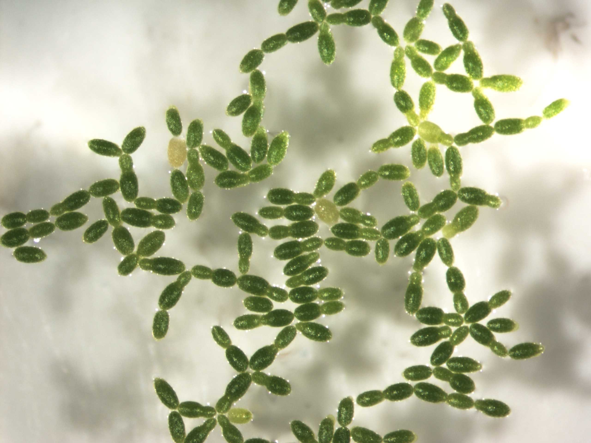

Common protocols we use here at the ACDC are on the protocols page.
Resources we have used for outreach and education events are on the educational resources page.
You can also read an introduction to duckweed, learn about duckweed in space, or browse links to external duckweed resources.
If there are additional resources you'd like to see here, please contact us.
